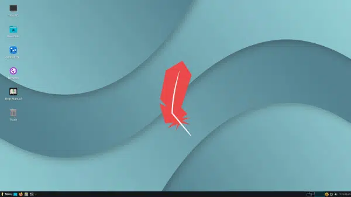

- software de sistema
- software de aplicação
- software de programação
- software de segurança
- software de bases de dados
- software de redes
- sotware de educional
- software de entretenimento
- software de gestão emprasarial
- software de design assistindo por computador (CAD)
o que é um software ?
Software é um conjunto de instruções que devem ser seguidas e executadas por um mecanismo, seja ele um computador ou um aparato eletromecânico. É o termo usado para descrever programas, apps, scripts, macros e instruções de código embarcado diretamente (firmware), de modo a ditar o que uma máquina deve fazer. Todo programa em seu computador, celular, tablet, smart TV, console de videogame, set-top box e etc. é um software, seja ele um editor de textos, um navegador, um editor de áudio ou vídeo, um jogo, um app de streaming e por aí vai. Um software pode se apresentar de várias formas, por isso se dividem em três categorias principais:
software de sistema
é um conjunto de informações processadas pelo sistema interno de um dispositivo que permite a interação entre usuário e o hardware exemplos: windows.android.ios


software de aplicação
é criado, em regra, para executar tarefas específicas tal como o processamento de texto, reprodução de áudio.
Microsoft Word, Spotify, Calculadora, Instagram, TikTok.

software de programação
Softwares de programação são softwares que permitem que programadores criem outros programas, através do uso de linguagens de programação
exemplos Word, Exel, Paint, Bloco de notas, calculadora
software de segurança
Trata-se de uma classe de sistemas que age na identificação, na prevenção e no bloqueio de possíveis invasões, a partir dos códigos maliciosos.
exemplos:Os dispositivos de segurança mais comuns são os fusíveis e os disjuntores. Com finalidade de proteger a instalação, os fusíveis são feitos de chumbo e estanho, que se fundem quando atravessados por uma corrente elétrica maior que a suportada pelo circuito

software de dados
Software de gestão de dados é um sistema utilizado para captar, armazenar, organizar e analisar grandes quantidades de dados de uma empresa.
Processamento em batch. As informações são enviadas diretamente para um servidor central, às vezes em uma infraestrutura de cloud computing. ... Processamento online. ... Processamento offline. ... Processamento em tempo real.

software de redes
Software aplicativo. São aplicações projetadas para resolver problemas específicos dos usuários. Software de programação. ... Software de sistema. ... Software livre. ... Software proprietário. ... Software freeware.
exemplos:São exemplos típicos de dispositivos de rede: switches; roteadores; concentradores; repetidores; adaptadores de rede; modem; gateway; bridge;
software de educacional
Software educativo de sistema tutorial; Software educativo de exercício e prática; Software educativo de simuladores e jogos e Software educativo de sistema experto.
Exemplos: Chrome, calculadora, Windows Media Player, Microsoft Word, AutoCAD, Adobe Photoshop.
software de entreterimento
São diversos shows, espetáculos de teatro, Stand up, cinema e outras atrações que podem ser compradas no cartão de crédito. Os aplicativos são grandes aliados no entretenimento, por isso, é importante selecionar os melhores que atendem a sua necessidade já que existem tantas opções.
exemplos:Spotify ‑ Músicas e Podcasts. Grátis. Grátis. TikTok. Grátis. Grátis. Netflix. Grátis. ... Disney+ Grátis. ... Dolby Access. GrátisOfertas em compras de aplicativos. ... iTunes. GrátisOfertas em compras de aplicativos. ... Prime Video for Windows. Grátis. ... DTS Sound Unbound. GrátisOfertas em compras de aplicativos.
software de gestão empresarial
O software de gestão empresarial ocupa uma posição central nas organizações modernas: o painel de controle que concentra todos os dados, documentos e processos do negócio. Com ele, é possível integrar todas as áreas da empresa, automatizar tarefas e acelerar as rotinas diárias, conquistando muito mais eficiência.
exemplos:Conta Azul. O software de gestão financeira Conta Azul é bem completo e fácil de usar. ... Nibo. Outra opção de software de gestão financeira é o Nibo. ... Asaas. ... Agendor. ... Pipedrive. ... Trello. ... Tiny. ... QuickBooks.
software de desig assistindo por computador
é uma tecnologia para design e documentação técnica que substitui o desenho manual por um processo automatizado.
exemplos As melhores opções de software CAD incluem AutoCAD, SolidWorks, SketchUp, Revit e Fusion 360. Cada um desses softwares oferece recursos avançados e um conjunto de ferramentas completo para projetos de design.
Windows 1.0 (1985)
A primeira versão do SO foi lançada no longínquo ano de 1985 e era mais uma extensão do MS-DOS do que um software completo. Ele se caracterizava pelo modelo colorido na tela e aplicações como bloco de notas e até um Paint. Ele não permitia a sobreposição de janelas, por exemplo, e por isso todas elas ficavam expostas lado a lado.

Windows 2.0 (1987)
O Windows 2.0 chegou ao mercado em dezembro de 1987 e, tanto como o seu predecessor quanto o seu sucessor, usava uma estrutura de computação em 16 bits. Ele apresentou melhorias na interface, como a possibilidade de sobrepor janelas de programas, atalhos de teclado e suporte a VGA.

Windows 3.0 (1990)
Sucessor do Windows 2.0, que trouxe poucas alterações em relação ao primeiro, o 3.0 foi lançado em 1990 com melhorias de memória. Ele também se destacou pelo visual mais limpo, melhor organização de arquivos e apresentou ao mundo o Campo Minado, que viria a ser um destaque nos computadores pré-internet.

Windows 95 (1995)
Considerado um dos sistemas operacionais mais importantes da história, o Windows 95 abriu uma nova era para a Microsoft. Ele foi programado em 32 bits e trouxe melhorias que incluíam o sistema plug and play, recursos de acessibilidade e o navegador Internet Explorer. Lançado em agosto de 1995, o sistema foi o primeiro com o menu Iniciar, que permanece até hoje, e foi o responsável por ajudar o computador a se tornar um item popular nas casas das famílias do mundo todo.

Windows 98 (1998)
O Windows 98 aprofundou a revolução que o seu antecessor começou. Disponibilizado em junho de 1998, ele era mais estável, tinha suporte a mais de um monitor e componentes USB, particionamento do HD, serviço Outlook de e-mail, modo de hibernação e mais. No mundo todo, ele foi o primeiro contato de muita gente com o PC, já que ainda estava em muitas máquinas mesmo após a virada do século.

Windows 2000 (2000)
O Windows 2000 foi lançado em fevereiro de 2000 e consolidou o fim definitivo da nomenclatura "NT". O Windows NT, que começou a ser disponibilizado em 1993, era voltado para usuários corporativos, servidores e workstation, e não para o público geral. Por causa disso, sua menção é importante, além de ter trazido recursos importantes e novos sistemas de segurança.

Windows XP (2001)
O Windows XP foi lançado em outubro de 2001 e à época era bastante inovador, principalmente no quesito visual. Ele apostou em um menu Iniciar verde e barras azuis que se tornaram bastante populares entre os usuários. Entre as várias novidades que ele apresentou em suas versões, havia a opção de alternância de contas de usuários sem fechar arquivos abertos, suporte para DSL e wireless. Ele popularizou programas do Windows Media Player, já que CDs poderiam ser lidos pelos drives e tocados no programa. Seu wallpaper, uma fotografia de planícies na Califórnia, tornou-se uma das imagens mais famosas da era da internet.

Windows Vista (2006)
O Windows Vista teve um hiato bastante grande em relação ao anterior, se desconsiderarmos as atualizações e novas versões do XP. Ele foi lançado em novembro de 2006, apresentando uma nova estética de janelas transparentes e melhores recursos de segurança. Apesar disso, ele não foi tão bem recepcionado porque muitos usuários reclamavam que ele deixava o computador lento, o que fez muita gente continuar usando o XP por mais um bom tempo.

Windows 7 (2009)
Lançado em julho de 2009, o Windows 7 foi recepcionado de maneira um pouco melhor na comparação com o Vista e melhorou tanto o esquema visual quanto o desempenho do sistema operacional. Ele também se destacou por apresentar recursos como suporte a telas touch screen e multi-touch, leitura de Blu-ray, Windows Defender, modo Windows XP e mais.

Windows 8 (2012)
Apesar de também não ter sido muito popular, o Windows 8 trouxe mudanças que podem ser vistas até hoje no software da Microsoft. Ele foi lançado em outubro de 2012 e remodelou por completo a interface do sistema operacional, trazendo um novo sistema de widgets, janelas retangulares e a remoção do clássico menu iniciar, que foi bastante polêmica. Apesar disso, ele começou uma importante integração com os smartphones, que na época já estavam em alta. Ele era compatível com o Windows Phone, o sistema operacional para celulares da Microsoft, e tinha integração com vários apps mobile.

Windows 10 (2015)
O software mais recente da Microsoft foi lançado em julho de 2015. Ele trouxe de volta o menu Iniciar e tem como um dos principais diferenciais o foco multimídia, que pode ser visto na integração com o Xbox, notebooks e tablets. Outra grande novidade que ele apresentou foi a assistente virtual Cortana. De acordo com o site da Net Marketshare, ele é o SO mais utilizado no mundo atualmente, estando em mais de 66% dos computadores ao redor do globo. Logo atrás está o Windows 7, que mesmo mais de dez anos após o seu lançamento ainda está presente em 17% dos PCs.

Windows 11 (2021)
Nesta quinta-feira (24), a Microsoft apresentou o futuro do seu produto mais popular. Apesar de ter sido anunciado hoje, ele será lançado no final de 2021 e chegará em uma atualização gratuita para quem tiver a versão anterior. O sistema operacional terá várias novidades, incluindo um visual mais moderno, mais segurança e velocidade, bem como um novo método de organização de janelas. Além disso, pela primeira vez na história, aplicativos Android estarão presentes na Microsoft Store, o que marcará o início de uma nova era de integração entre ecossistemas de apps.

Linux Ubuntu
Desenvolvido por uma empresa chamada Canonical, o Ubuntu é baseado em um dos muitos derivados do Linux Debian. Esse software chegou ao mercado em 2004. As pessoas programadoras na época perceberam os destaques do sistema e sua facilidade na programação. A interface de linha de comando permitia que fosse usada uma sintaxe mínima para escrever programas. O Ubuntu tem três versões, todas desenvolvidas para diferentes propósitos.

Linux Ubuntu
Desenvolvido por uma empresa chamada Canonical, o Ubuntu é baseado em um dos muitos derivados do Linux Debian. Esse software chegou ao mercado em 2004. As pessoas programadoras na época perceberam os destaques do sistema e sua facilidade na programação. A interface de linha de comando permitia que fosse usada uma sintaxe mínima para escrever programas. O Ubuntu tem três versões, todas desenvolvidas para diferentes propósitos.

Linux Deepin
Deepin é uma distribuição baseada em Debian (era baseada em Ubuntu até a versão 15 lançada no final de 2015) que tem como objetivo fornecer uma interface elegante, confiável e amigável.

Kali Linux
Offensive Security é a empresa responsável pelo Kali Linux. Ele por si só é uma distro Linux baseada em Debian. Foi projetado para ajudar principalmente profissionais da área de segurança com seus inúmeros testes.

Manjaro Linux
Os principais recursos incluem processo de instalação intuitivo, detecção automática de hardware, modelo de lançamento estável, capacidade de instalar vários kernels, scripts Bash especiais para gerenciamento de drivers gráficos e extensa configurabilidade de desktop. O Manjaro Linux oferece o XFCE como as principais opções de desktop, bem como KDE, GNOME e uma edição minimalista da Net para pessoas usuárias mais avançadas. Faça o download do Manjaro agora mesmo.

Linux Debian
Debian é a distribuição mais antiga e mais popular do Linux. Como qualquer outro distro de peso, fornece uma ambientação muito agradável e rápida. Atualmente, sua última versão é a 11, que também é chamada de Bullseye.

Puppy Linux
Puppy Linux é mais uma distribuição Linux. A diferença aqui é que o Puppy é extraordinariamente pequeno, mas cheio de recursos. O Puppy inicializa em um ramdisk e, ao contrário das distribuições de live CD que tem que extrair coisas do CD, ele carrega na RAM. Isso significa que todos os aplicativos começam em um piscar de olhos e respondem à entrada instantaneamente.

Linux OpenSUSE
São dois ramos de desenvolvimento principais: SUSE Leap, que é a versão estável e que é voltada para as pessoas usuárias, como também para as pessoas desenvolvedoras. Tornando a escolha perfeita para quem quer ajudar no desenvolvimento de código aberto. Em contrapartida, temos o SUSE Tumbleweed, que seria a versão de teste contínua com as mais recentes versões de software e IDEs. O TumbleWeed é fácil para qualquer pessoa usuária avançada ou desenvolvedora de software, graças principalmente ao seu grande número de pacotes disponíveis. O seu gerenciador de pacotes é o Yast e é muito recomendável para que você administre os seus programas e desenvolva aplicativos com ele.

Linux Lite
O Linux Lite é voltado principalmente para pessoas usuárias ativas do Windows. O objetivo é fornecer um conjunto completo de aplicativos para auxiliá-las em suas necessidades diárias de computação, incluindo um pacote de escritório completo, reprodutores de mídia e outros softwares diários essenciais.
MX Linux
Utiliza o XFCE como a área de trabalho padrão (com edições separadas do KDE Plasma e Fluxbox também disponíveis), é um sistema operacional de peso médio projetado para combinar uma área de trabalho elegante e eficiente com configuração simples, alta estabilidade e desempenho sólido.

Linux CentOS
O Linux CentOS é mais um sistema operacional gratuito que tem como objetivo criar um ecossistema de código aberto confiável. Ele é baseado no RHEL, e é uma das alternativas do Red Hat Enterprise Linux por ser gratuito.

Arch Linux
Arch Linux é a distribuição que foi projetada para pessoas usuárias avançadas ou especialistas em Linux. Sendo possível configurar e personalizar o sistema da maneira que a pessoa usuária quiser. Podemos dizer também que o Arch é voltado para pessoas que gostam de ter controle sobre o seu sistema operacional.

Linux Zorin OS
Zorin OS é uma distribuição Linux baseada no Ubuntu projetada especialmente para iniciantes no Linux. Possui uma interface gráfica de usuário semelhante ao Windows e muitos programas semelhantes aos encontrados no Windows.

Linux Slackware
Inclui a maioria dos aplicativos mais recentes enquanto tenta manter um senso de tradição, proporcionando simplicidade e facilidade de uso junto com a flexibilidade e poder, o Slackware tenta trazer o melhor de todos os mundos. O Slackware Linux oferece a pessoas usuárias novas e experientes um sistema completo, equipado para servir em qualquer capacidade, desde uma estação de trabalho pessoal a um servidor em uma sala de máquinas. Um leque completo de ferramentas de desenvolvimento, editores e bibliotecas atuais estão incluídos para quem deseja desenvolver ou compilar programas nele.

Oracle Linux
Alguns dos recursos especiais do Oracle Linux incluem um kernel Linux desenvolvido sob medida e rigorosamente testado denominado “Oracle Unbreakable Kernel“, forte integração com os produtos de hardware e software da Oracle, incluindo a maioria dos aplicativos de banco de dados e todas as outras funcionalidades disponíveis no mercado.

Elementary OS
Alguns de seus recursos mais interessantes incluem um ambiente de área de trabalho personalizado chamado Pantheon e muitos aplicativos personalizados, incluindo fotos, músicas, vídeos, calendário, terminal, arquivos e muito mais. Ele também vem com alguns aplicativos familiares como o navegador Epiphany e um fork do Geary Mail.

Linux Fedora
Fedora dentre as distribuições linux é a que mais se destaca por ser realmente simples e prover uma grande quantidade de aplicativos previamente instalados. Isso a torna uma distribuição muito amigável e que facilita a entrada de novas pessoas usuárias. É flexível e poderoso, baseado no Red Hat, também é utilizado como ambiente de teste da transição do Red Hat. Foi feito tanto para sistemas de desktop, servidores e ecossistemas IoT. É utilizado principalmente para fins de desenvolvimento e muito útil para pessoas desenvolvedoras e estudantes.

Tails Linux
O sistema vem com várias aplicações de Internet, incluindo um navegador web, cliente IRC, cliente de e-mail e mensageiro instantâneo, todas pré-configuradas com a segurança em mente e com todo o tráfego anonimizado. Para conseguir isso, o Incognito usa a rede Tor para dificultar o rastreamento do tráfego da Internet.

Linux Raspbian
Nesse sistema, temos um pouco mais de 35.000 pacotes pré-compilados em um formato agradável para fácil instalação em um Raspberry Pi. A primeira versão foi desenvolvida em junho de 2012, mas a distribuição continua ativa, desenvolvida com ênfase na melhoria da estabilidade e desempenho de todos os pacotes Debian possíveis. Embora o Debian produza uma distribuição para a arquitetura arm, ela é compatível apenas com versões posteriores à usada no Raspberry Pi (CPUs ARMv7-A e superiores vs CPU ARMv6 do Raspberry Pi).

Linux Pop!_OS
Pop! _OS é projetado para não ter nenhum item na área de trabalho, a fim de permitir que a pessoa usuária se concentre no trabalho. A distribuição é desenvolvida pelo varejista de computadores Linux System76.